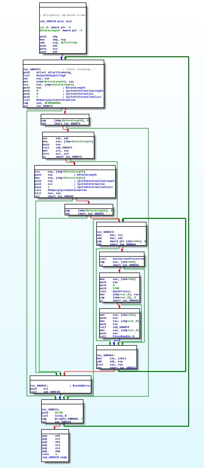
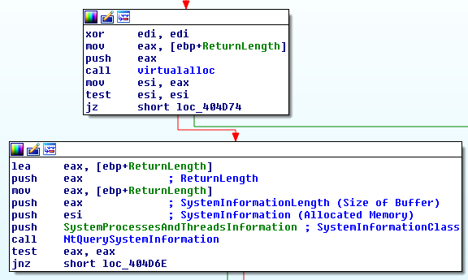

Recently, I had the chance to check out one of MalwareTech's latest blog posts on the Phase Bot. What caught my eye in particular was his mention of a track data scanner module towards the end of the post.
As point of sale related malware becomes increasingly popular, the addition of such modules in widespread malware families has become more commonplace. Everyone is attempting to hop on the bandwagon it would seem. That being said, I was still quite curious to see what the referenced DLL looked like. So, I went ahead and took a look at 1fa781b2ece5dfa36d51704c81e61e19. The file was detected by 4/56 at the time of writing this (really A/V vendors?).
Overall the DLL is quite straightforward. The DLLMain function spawns a new thread as expected, which includes the following infinite loop.

The malware iterates through all processes, searches for track data via a custom function, writes output to STDOUT, and exfiltrates via HTTP POST requests. All very similar to what we've seen before.
However, one particular thing stuck out to me-- the method the DLL uses for identifying running processes on the victim machine. Almost always, we'll see malware use either EnumProcesses or the CreateToolhelp32Snapshot Windows API functions used for this task.
Somewhat unusually, this particular piece of malware uses the low-level NtQuerySystemInformation function instead.

As we see from the Microsoft documentation, this function has the ability to provide a wealth of information about the system its run on depending on what SYSTEM_INFORMATION_CLASS enumeration is provided in the first argument. As we can see below, we're supplying the SystemProcessesAndThreadsInformation (0x05) enumeration to this function. While this particular enumeration isn't witnessed in the MSDN documentation, we see that this enumeration is equivalent to SystemProcessInformation. Knowing this, we realize that this particular ...